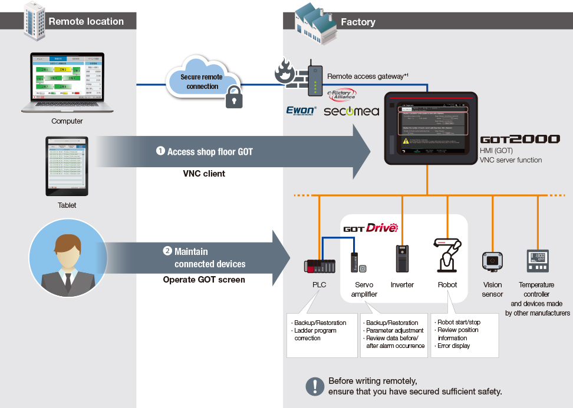

Solusi
Remote FA

Pemeliharaan Jarak Jauh

Kasus.08 Lakukan pemeliharaan pada berbagai perangkat FA dengan mudah, bahkan dari lokasi yang jauh
- Pemeliharaan Jarak Jauh
Masalah
Lakukan pemeliharaan pada berbagai perangkat FA dengan mudah, bahkan dari lokasi terpencil
Solusi
(1) Fungsi server VNC dari Seri GOT2000 memungkinkan pengguna untuk menampilkan dan mengoperasikan layar GOT "apa adanya" menggunakan klien VNC di lokasi terpencil.
(2) Memantau dan memelihara perangkat Mitsubishi Electric seperti PLC, penguat servo, inverter, robot di layar GOT.
* Dengan menggunakan solusi jarak jauh Ewon/Secomea, pengguna dapat dengan mudah dan aman membangun lingkungan akses jarak jauh.

- *1 Pengoperasian dikonfirmasi dengan Seri Ewon Cosy+ dan Secomea Sitemanager.
- * Silakan lihat katalog produk terkait untuk fungsi yang didukung dan batasan masing-masing model.
Keuntungan
- Dengan menghubungkan GOT dengan perangkat FA individual, pengguna dapat meninjau informasi dan melakukan pemeliharaan menggunakan GOT bahkan dari lokasi yang jauh.
- Dapat meminimalkan penggunaan perangkat baru dan memperkenalkan pemeliharaan jarak jauh.